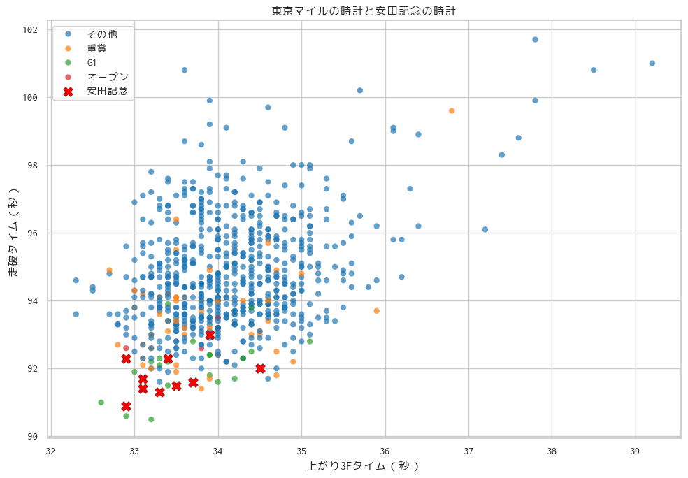
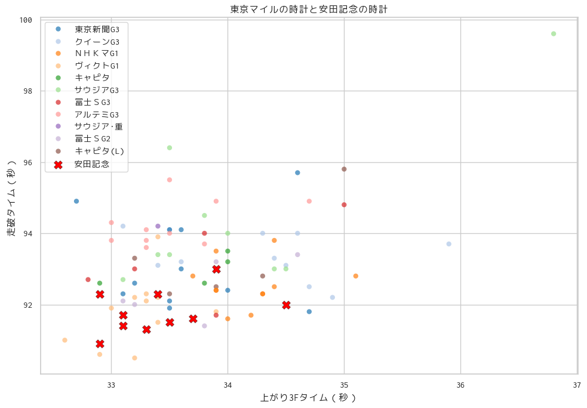

東京1600m#
%run 0.2_function.ipynb
# 2005-2025 東京
df = result_df("2015", "2025", ["東"])
distance = df["距離"] == 1600
ground_type = df["芝・ダ"] == "芝"
# race_class = df["クラスコード"] >= 100
arrival = df["確定着順"] == 1
cond = distance & ground_type & arrival
df = df[cond]
df[
[
"レース日",
"レース名",
"クラスコード",
"馬名",
"走破タイム",
"上がり3Fタイム",
"PCI",
"馬場状態",
"年齢",
"騎手名",
"単勝オッズ",
]
].sort_values("走破タイム").head(10)
| レース日 | レース名 | クラスコード | 馬名 | 走破タイム | 上がり3Fタイム | PCI | 馬場状態 | 年齢 | 騎手名 | 単勝オッズ | |
|---|---|---|---|---|---|---|---|---|---|---|---|
| 67904 | 2019-05-12 | ヴィクトG1 | 195 | ノームコア | 90.5 | 33.2 | 53.6 | 良 | 4 | レーン | 9.4 |
| 71404 | 2020-05-17 | ヴィクトG1 | 195 | アーモンドアイ | 90.6 | 32.9 | 55.2 | 良 | 5 | ルメール | 1.4 |
| 72440 | 2019-06-02 | 安田記念G1 | 195 | インディチャンプ | 90.9 | 32.9 | 55.8 | 良 | 4 | 福永祐一 | 19.2 |
| 55416 | 2021-05-16 | ヴィクトG1 | 195 | グランアレグリア | 91.0 | 32.6 | 57.5 | 良 | 5 | ルメール | 1.3 |
| 51660 | 2018-06-03 | 安田記念G1 | 195 | モズアスコット | 91.3 | 33.3 | 54.5 | 良 | 4 | ルメール | 15.7 |
| 78477 | 2023-10-21 | 富士ＳG2 | 179 | ナミュール | 91.4 | 33.8 | 52.2 | 良 | 4 | モレイラ | 3.8 |
| 42648 | 2023-06-04 | 安田記念G1 | 195 | ソングライン | 91.4 | 33.1 | 55.7 | 良 | 5 | 戸崎圭太 | 7.4 |
| 3802 | 2017-06-04 | 安田記念G1 | 195 | サトノアラジン | 91.5 | 33.5 | 53.9 | 良 | 6 | 川田将雅 | 12.4 |
| 27908 | 2016-05-15 | ヴィクトG1 | 195 | ストレイトガール | 91.5 | 33.4 | 54.4 | 良 | 7 | 戸崎圭太 | 17.7 |
| 68973 | 2020-06-07 | 安田記念G1 | 195 | グランアレグリア | 91.6 | 33.7 | 53.1 | 稍 | 4 | 池添謙一 | 12.0 |
# class_code_labels = {
# 7: "未勝利",
# 11: "未出走",
# 15: "新馬",
# 19: "400万下",
# 23: "500万下",
# 39: "900万下",
# 43: "1000万下",
# 63: "1500万下",
# 67: "1600万下",
# 131: "オープン",
# 131: "オープン",
# 147: "重賞",
# 163: "G3",
# 179: "G2",
# 195: "G1",
# }
class_code_labels = {
7: "その他",
11: "その他",
15: "その他",
19: "その他",
23: "その他",
39: "その他",
43: "その他",
63: "その他",
67: "その他",
131: "オープン",
131: "オープン",
147: "重賞",
163: "重賞",
179: "重賞",
195: "G1",
}
df["クラス"] = df["クラスコード"].map(class_code_labels)
import matplotlib.pyplot as plt
import pandas as pd
import seaborn as sns
# 数値化と欠損除去（前処理）
cols = ["上がり3Fタイム", "走破タイム"]
df[cols] = df[cols].apply(pd.to_numeric, errors="coerce")
df_plot = df.dropna(subset=cols)
# 安田記念とそれ以外に分割
df_yasuda = df_plot[df_plot["レース名"] == "安田記念G1"]
df_others = df_plot[df_plot["レース名"] != "安田記念G1"]
# 描画
plt.figure(figsize=(10, 7))
sns.set(style="whitegrid", font="Ricty Diminished")
# 1) その他のレースを薄めに表示
sns.scatterplot(
data=df_others,
x="上がり3Fタイム",
y="走破タイム",
alpha=0.7,
edgecolor="none",
hue="クラス",
palette="tab10", # 任意。カテゴリ数に応じて調整可
)
# 2) 安田記念を強調
sns.scatterplot(
data=df_yasuda,
x="上がり3Fタイム",
y="走破タイム",
color="red",
# 点のサイズ
s=100,
# マーカーを変える（例: "X", "D", "^"など）
marker="X",
edgecolor="black",
linewidth=0.3,
label="安田記念",
)
plt.xlabel("上がり3Fタイム（秒）")
plt.ylabel("走破タイム（秒）")
plt.title("東京マイルの時計と安田記念の時計")
plt.legend()
plt.tight_layout()
plt.show()

# 2005-2025 東京
df = result_df("2015", "2025", ["東"])
distance = df["距離"] == 1600
ground_type = df["芝・ダ"] == "芝"
race_class = df["クラスコード"] >= 115
arrival = df["確定着順"] == 1
cond = distance & ground_type & arrival & race_class
df = df[cond]
# 数値化と欠損除去（前処理）
cols = ["上がり3Fタイム", "走破タイム"]
df[cols] = df[cols].apply(pd.to_numeric, errors="coerce")
df_plot = df.dropna(subset=cols)
# 安田記念とそれ以外に分割
df_yasuda = df_plot[df_plot["レース名"] == "安田記念G1"]
df_others = df_plot[df_plot["レース名"] != "安田記念G1"]
# 描画
plt.figure(figsize=(10, 7))
sns.set(style="whitegrid", font="Ricty Diminished")
# 1) その他のレースを薄めに表示
sns.scatterplot(
data=df_others,
x="上がり3Fタイム",
y="走破タイム",
alpha=0.7,
edgecolor="none",
hue="レース名",
palette="tab20", # 任意。カテゴリ数に応じて調整可
)
# 2) 安田記念を強調
sns.scatterplot(
data=df_yasuda,
x="上がり3Fタイム",
y="走破タイム",
color="red",
# 点のサイズ
s=100,
# マーカーを変える（例: "X", "D", "^"など）
marker="X",
edgecolor="black",
linewidth=0.3,
label="安田記念",
)
plt.xlabel("上がり3Fタイム（秒）")
plt.ylabel("走破タイム（秒）")
plt.title("東京マイルの時計と安田記念の時計")
plt.legend()
plt.tight_layout()
plt.show()

cond = df["レース名"] == "安田記念G1"
df[cond][
[
"レース日",
"馬場状態",
"馬名",
"走破タイム",
"上がり3Fタイム",
"父馬名",
"母の父馬名",
]
].sort_values("レース日")
| レース日 | 馬場状態 | 馬名 | 走破タイム | 上がり3Fタイム | 父馬名 | 母の父馬名 | |
|---|---|---|---|---|---|---|---|
| 9470 | 2015-06-07 | 良 | モーリス | 92.0 | 34.5 | スクリーンヒーロー | カーネギー |
| 23977 | 2016-06-05 | 良 | ロゴタイプ | 93.0 | 33.9 | ローエングリン | サンデーサイレンス |
| 3802 | 2017-06-04 | 良 | サトノアラジン | 91.5 | 33.5 | ディープインパクト | Storm Cat |
| 51660 | 2018-06-03 | 良 | モズアスコット | 91.3 | 33.3 | Frankel | Hennessy |
| 72440 | 2019-06-02 | 良 | インディチャンプ | 90.9 | 32.9 | ステイゴールド | キングカメハメハ |
| 68973 | 2020-06-07 | 稍 | グランアレグリア | 91.6 | 33.7 | ディープインパクト | Tapit |
| 33551 | 2021-06-06 | 良 | ダノンキングリー | 91.7 | 33.1 | ディープインパクト | Storm Cat |
| 56453 | 2022-06-05 | 良 | ソングライン | 92.3 | 32.9 | キズナ | シンボリクリスエス |
| 42648 | 2023-06-04 | 良 | ソングライン | 91.4 | 33.1 | キズナ | シンボリクリスエス |
| 75145 | 2024-06-02 | 稍 | ロマンチックウォリ | 92.3 | 33.4 | Acclamation | Street Cry |
安田記念
走破タイム、上がり3Fともに速いレース質になる。
1.31秒台の決着で上がりも33秒台のレースが前提となるレース